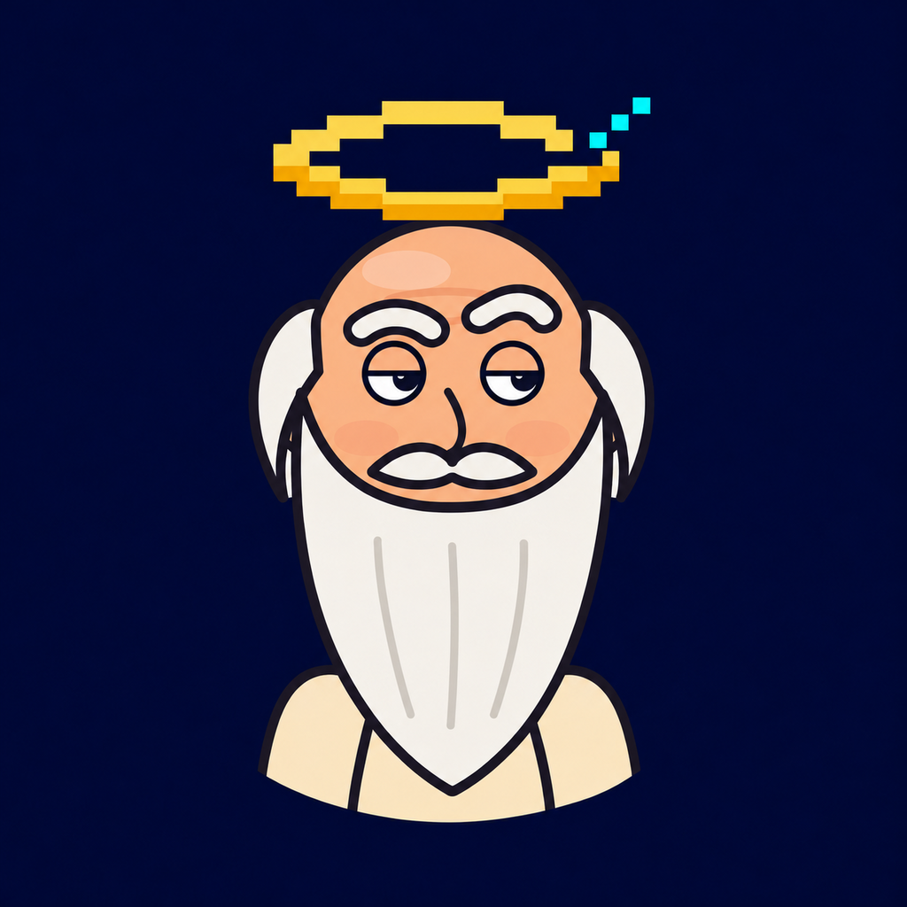

Animated satire · Creator tools
The world is still
in beta.
God made the universe. Adam wants to monetize it. Patch is still processing.
Earth in Beta is an independent animated comedy about artificial intelligence, startup culture and questionable decisions. Short sketches. Dry humor. No voices.

Earth in Beta application
Private tools for an independent channel.
The Earth in Beta application supports the channel operator's production and publishing workflow. It receives approved scripts, prepares animated videos and uses authorized Google connections to manage the operator's own content. This website explains the application; it does not provide public account registration or Google sign-in.
Prepare
Approved scripts are organized for production. Where enabled, an authorized Google Drive connection reads the documents selected for that workflow.
Publish
An authorized YouTube connection uploads finished videos and manages their titles, descriptions, visibility and scheduled publication according to the operator's settings.
Confirm
The application retrieves video identifiers, processing and publication status so the operator can distinguish a received script from a completed upload.
Your authorization controls access.
Google access is granted by the channel operator through Google's authorization flow. The application does not ask for a Google password. Access can be revoked in Google Account connections.
Data & contact
A clear purpose for each connection.
Google account data is used for the channel workflow described above. Read how information is accessed, stored, shared and deleted in the privacy policy. The application is independent and is not endorsed by Google or YouTube.
Contact: adamantiumblando@gmail.com